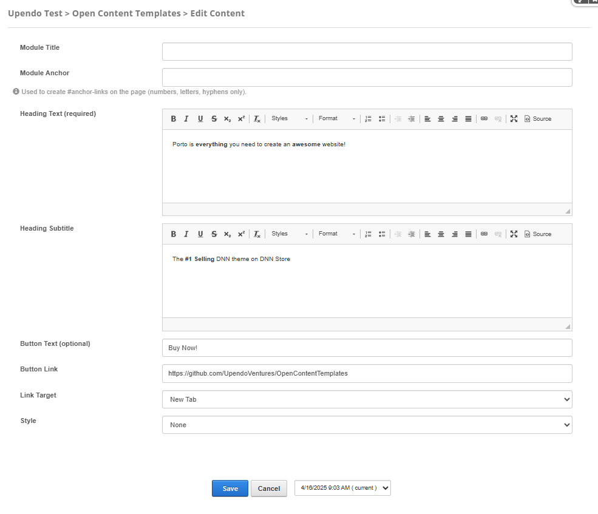

Porto-Call-To-Action Documentation
Overview
The Porto-Call-To-Action component allows you to create engaging call-to-action sections in your layout. It supports customizable text, buttons, and styles to match your design needs. You can define a heading, a subheading, and an optional button with a link to guide users toward specific actions. Additionally, the component offers a variety of styles, such as borders, featured sections, parallax backgrounds, and color themes, to enhance the visual appeal of your call-to-action.
This component is highly flexible and integrates seamlessly with OpenContent, allowing you to configure dependencies between fields. For example, you can enable specific styles like "With Borders" or "Parallax" based on user selections. The component also supports advanced options, such as multilingual content and image uploads for parallax effects, making it suitable for a wide range of use cases.
For more details, check out the Porto-Call-To-Action repository on GitHub or the Porto documentation.
Usage Example
Edit
Properties
| Property | Data Type | Description |
|---|---|---|
| Module Title | string | Used to define the title of the module. This title is displayed in the DNN administration interface to help identify the module. |
| Module Anchor | string | Used to create anchor links on the page. This allows users to link directly to the module using a unique identifier. Only letters, numbers, and hyphens are allowed. |
| Heading Text | String | Required. The main heading text for the call-to-action section. This is the primary text that grabs the user's attention. |
| Heading Subtitle | String | An optional subtitle to provide additional context or supporting information for the heading. |
| Button Text | String | Optional. The text displayed on the call-to-action button. If left empty, no button will be displayed. |
| Button Link | String | The URL or link the button will navigate to when clicked. Example:
https://github.com/UpendoVentures/OpenContentTemplates. |
| Link Target | Select | Specifies where to open the linked document. Options include:
|
| Style | String |
Defines the overall style of the call-to-action section. Available options include:
|
Settings

Settings Properties
| Setting | Type | Description | Options |
|---|---|---|---|
| Margin (top) | Select | Defines the top margin of the component. | mt-0, mt-1,mt-2, mt-3, mt-4, mt-5,
and mt-auto.
|
| Margin (bottom) | Select | Defines the bottom margin of the component. | mb-0, mb-1,
mb-2, mb-3, mb-4, mb-5, and
mb-auto.
|
| Padding (top) | Select | Defines the top padding of the component. | pt-0, pt-1,
pt-2, pt-3, pt-4, pt-5, and
pt-auto.
|
| Padding (bottom) | Select | Defines the bottom padding of the component. | pb-0, pb-1,
pb-2, pb-3, pb-4, pb-5, and
pb-auto.
|
Views
Below are examples of the different styles available for the Porto-Call-To-Action component. Each style is customizable and can be adapted to your design needs.
Default: A standard call-to-action section with no additional features.
With Borders: Adds borders to the section for a more defined layout.
Featured: Highlights the section as featured with customizable styles (e.g., Primary, Secondary).
Colors: Applies a color theme to the section (e.g., Primary, Secondary, Tertiary).
With Arrow: Includes an arrow in the design for visual emphasis.
Animated: Adds animation effects to the section for dynamic visuals.
Button Centered: Centers the button in the section for a balanced layout.
Small: Displays a smaller version of the section.
Full Width: Expands the section to full width for maximum impact.
Parallax: Adds a parallax background effect for a dynamic scrolling experience.
Footer: Styles the section for use in a footer layout.

Default, WithBorders,
Featured, Colors, Parallax, and others, to match your design needs.
Additionally, verify the following dependencies based on the selected Style:
-
With Borders: If
Styleis set toWithBorders, ensure that the With Borders property is configured with a valid option, such asnone,with-borders, orwith-full-borders. -
Featured: If
Styleis set toFeatured, configure the Featured property with one of the following options:none,featured-primary,featured-secondary,featured-tertiary, orfeatured-quaternary. -
Colors: If
Styleis set toColors,Small, orFullWidth, ensure that the Color property is set to a valid theme, such as:call-to-action-primary,call-to-action-secondary,call-to-action-tertiary,call-to-action-quaternary, orcall-to-action-default. -
Parallax: If
Styleis set toParallax, ensure that the ParallaxImage property is configured with a valid image URL to enable the parallax background effect.
For more examples and detailed documentation, visit the Porto Call-To-Action Documentation.